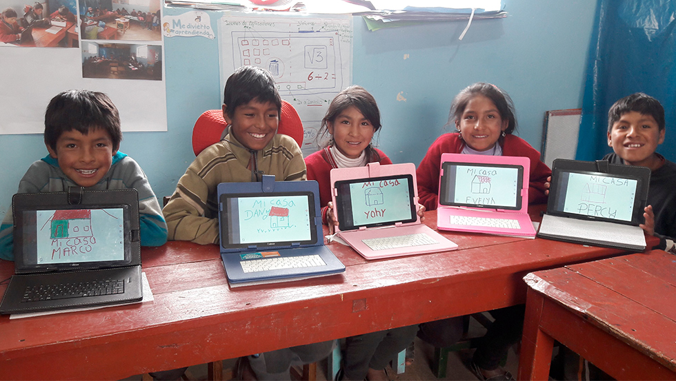

Autores: Vania Gómez García, Alin Reyes Clemente Grupo:630 Colegio de Bachilleres Plantel 4, Culhuacán Lázaro Cardenas Materia: Taller y Analisis de Produccion de Textos 2 Profesor: Adalberto Guerrero
Fecha: Junio 2025
Vivimos en una época de grandes cambios tecnológicos y sociales. La educación es clave para el desarrollo personal y del país. Este proyecto analiza los retos educativos en México y las carreras con mayor futuro.
Zonas marginadas con falta de escuelas y recursos. Muchas familias no pueden pagar materiales, transporte o uniformes. Consecuencias: abandono escolar, desempleo, pobreza.

"La educación es un factor clave para el desarrollo de México." — Latapí Sarre
"La educación indígena debe respetar la cultura y lengua." — Sylvia Schmelkes
"La ignorancia alimenta la pobreza. La educación rompe ese ciclo." — Navarro Robles
Las carreras tradicionales ya no aseguran empleo. Las del futuro son digitales, sustentables e innovadoras. Es fundamental lograr un equilibrio entre vocación y demanda laboral.
La educación debe ser de calidad y accesible para todos. Elegir una buena carrera ayuda al desarrollo personal y nacional. Informarse es poder: no decidir a ciegas, sino con estrategia.